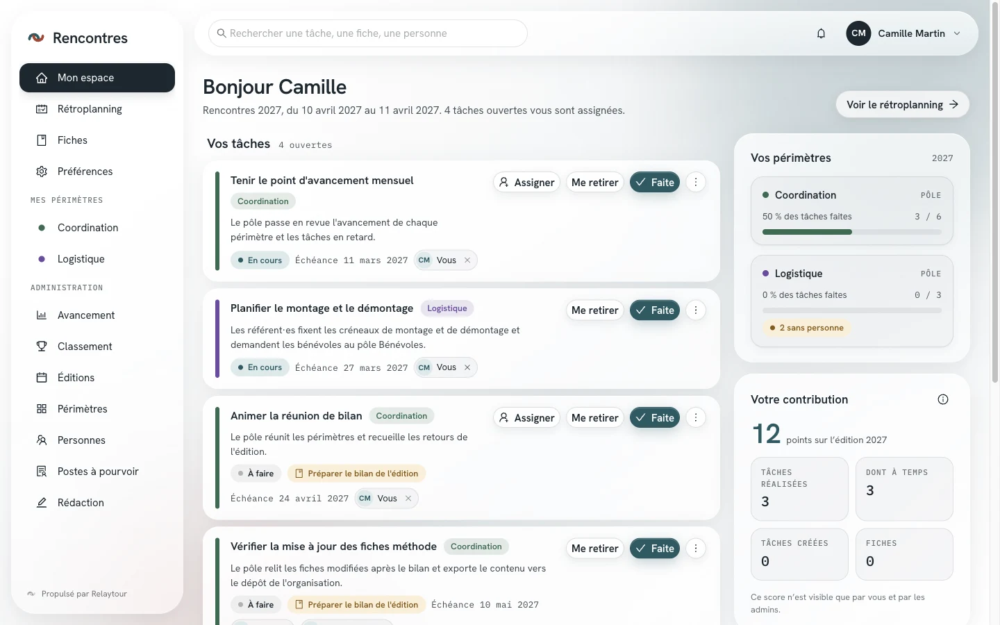
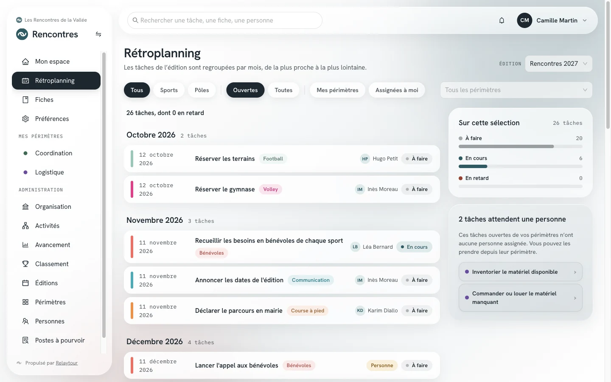
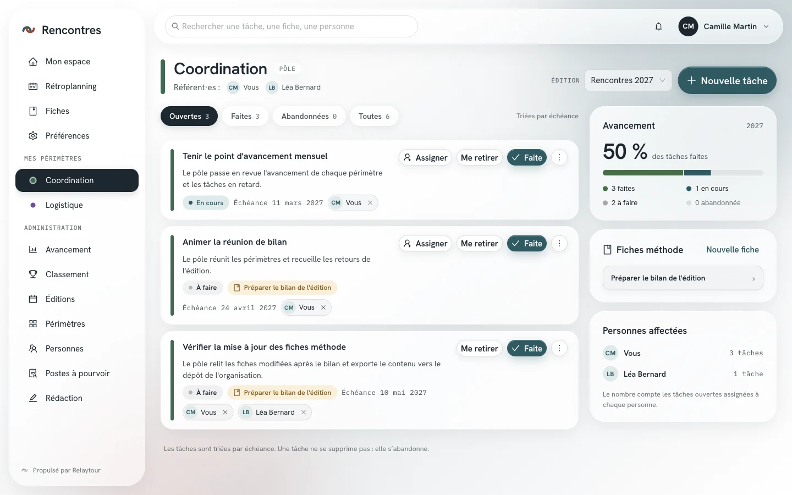
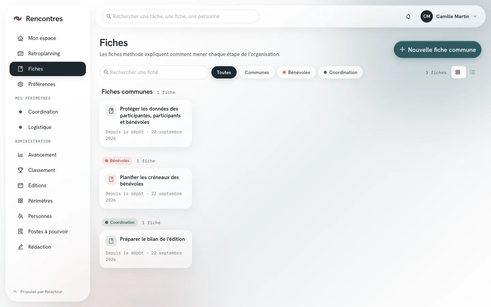
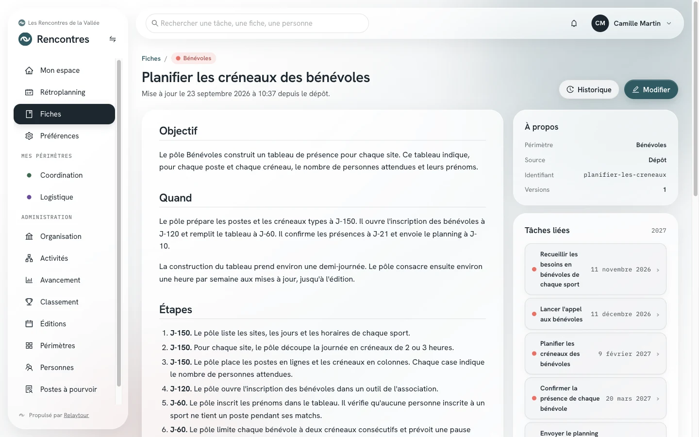
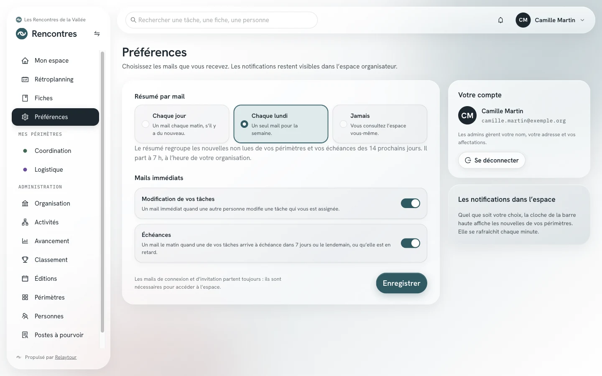

Le menu de gauche
Il donne accès à Mon espace, au Rétroplanning, aux Fiches et aux Préférences. Sous « Mes périmètres », vous retrouvez chaque périmètre où vous êtes affecté·e.
Vous êtes affecté·e à un ou plusieurs périmètres pour une période. L'espace organisateur vous montre vos tâches, leurs échéances et les fiches méthode qui expliquent comment les mener.
Ce mode d'emploi décrit les écrans ouverts à toute personne affectée. Si vous administrez une activité ou l'organisation, reportez-vous au mode d'emploi correspondant pour le menu « Administration ».
L'espace ne demande pas de mot de passe. Vous saisissez votre adresse mail, vous recevez un code à six chiffres, valable dix minutes, et vous le reportez dans l'écran de connexion. Le mail contient aussi un lien : il vous connecte directement quand vous l'ouvrez dans l'onglet où vous avez demandé le code.
Seules les personnes invitées par un admin peuvent se connecter. Si votre compte n'appartient à aucune organisation ouverte, l'écran vous invite à demander une nouvelle invitation.
Il donne accès à Mon espace, au Rétroplanning, aux Fiches et aux Préférences. Sous « Mes périmètres », vous retrouvez chaque périmètre où vous êtes affecté·e.
Elle porte la recherche (une tâche, une fiche, une personne), la cloche des notifications et le menu de votre compte. Ce menu mène aussi aux modes d'emploi.
Les adresses commencent par l'identifiant de l'activité affichée, par exemple /rencontres/retroplanning. Le mot « édition » devient « saison » ou « mandat » selon la nature de l'activité.
La page d'accueil réunit les tâches qui vous sont assignées, les tâches de vos périmètres que personne n'a prises, l'avancement de chacun de vos périmètres et votre contribution à la période en cours.

Votre score n'est visible que par vous et par les admins. Il compte les tâches réalisées, celles rendues à temps, les tâches créées et les fiches écrites.
Les tâches de la période sont regroupées par mois, de la plus proche à la plus lointaine. Les filtres limitent l'affichage à un groupe de périmètres, aux tâches ouvertes, à vos périmètres ou aux tâches qui vous sont assignées.

Aucune action ne se fait ici : une ligne mène à son périmètre, où la tâche se modifie. Le panneau de droite signale les tâches de vos périmètres qui attendent encore une personne.
La page de votre périmètre réunit ses tâches, son avancement, ses fiches méthode et les personnes affectées. Les tâches se filtrent par statut : ouvertes, faites, abandonnées ou toutes.

Ces actions sont ouvertes aux personnes affectées au périmètre pour la période consultée. Une période archivée passe ses tâches en lecture seule.
Les fiches méthode expliquent comment mener chaque étape de l'organisation. Elles se filtrent par périmètre, se cherchent par mot et s'affichent en cartes ou en liste condensée.

Chaque fiche indique sa date de mise à jour et son auteur, ou la mention « Depuis le dépôt » quand elle vient du dossier de contenu de l'organisation.
Une fiche décrit une démarche étape par étape, souvent avec ses échéances en J-n. Le panneau « Tâches liées » donne les tâches de la période en cours qui renvoient à cette fiche.

Écrivez les contacts sous forme de rôles, sans adresse ni numéro personnels : une fiche qui en contient ne peut pas être reversée dans le dépôt de l'organisation. L'historique des versions est réservé aux admins.
Vous choisissez les mails que vous recevez. Les notifications restent visibles dans l'espace, quelle que soit votre décision.

Votre nom, votre adresse et vos affectations sont gérés par les admins. Les mails de connexion et d'invitation partent toujours.
Les tâches et les fiches des périmètres où vous n'êtes pas affecté·e ne vous sont pas présentées. Une affectation passée garde l'accès aux archives du périmètre.
Un admin note vos périmètres souhaités et procède aux affectations. L'espace ne comporte pas de formulaire de candidature.
Si vous participez à plusieurs activités, un bouton en haut du menu permet de changer d'activité. Il reste masqué quand vous n'en voyez qu'une.
Une période s'appelle édition pour un événement, saison pour une section, mandat pour une instance. Les groupes de périmètres portent les noms déclarés par l'activité.
« Cette organisation est en lecture seule » signifie que plus aucune modification n'est acceptée. « Cette activité est archivée » signifie que l'activité reste consultable, sans modification.
Les admins disposent d'un menu « Administration ». Leurs modes d'emploi le décrivent, en complément de celui-ci.